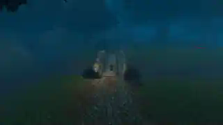
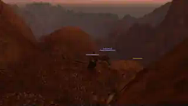
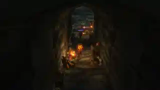

I · The Crossroads and the Sea
From the twilight between Redridge and Duskwood to the shadowed streets of Darkshire and the harbour toward Kalimdor.
What began as a burned note in Westfall became a journey worthy of a legend. Xuthar Morvayne and Carro Steelcave met at the crossroads between Redridge and Duskwood, crossed the haunted forest and southern harbour, sailed to Kalimdor, braved the Barrens and Stonetalon Mountains, returned through northern roads and the Stonewrought Dam, and finally climbed the ruins of Thoradin's Wall.
Six linked quests, two continents, untold roads and one steadfast friendship. Xuthar's strength grew from level 15 to level 17. The quest chain “…And That Note You Found” is complete, ending in the Cozy Sleeping Bag — a humble treasure at the end of an extraordinary journey. In his book of forgotten names, Xuthar has reserved a place of honour for the companion who walked beside him.
Read the Epic Chapters LIV–LIX · The Last Witness View Authentic Expedition Photos
From the twilight between Redridge and Duskwood to the shadowed streets of Darkshire and the harbour toward Kalimdor.

Across dangerous plains and steep mountain passages, the mystery of the charred note tested their patience and courage.

From Loch Modan to Thoradin's Wall, the final climb brought a simple reward and a friendship they would never forget.
These three images are authentic in-game preview captures from the expedition. The complete 88-image original-resolution archive is not yet online.
Westfall's hard-won fifteenth level, the Defias threat, the companions met on difficult quests, fishing in the rain, and that evening of ale and conversation in Goldshire with Carro Steelcave: these moments now form the opening pages of a much larger story. The adventures of 10 November have become an unforgettable milestone.